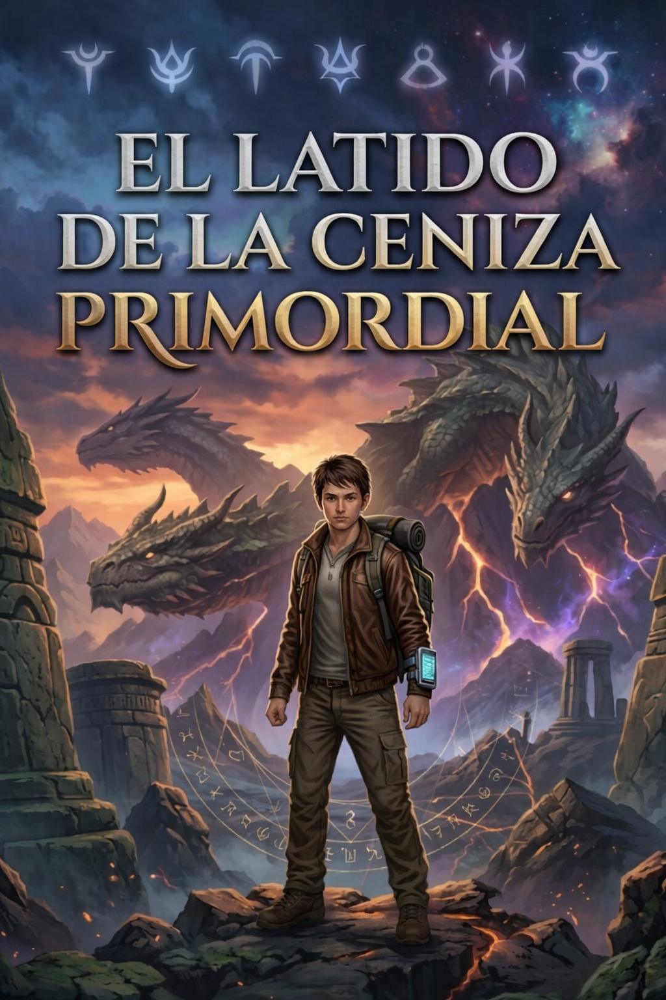

📖 El Grimorio del Cambio

Este es el archivo donde se registran las crónicas del Cambio, la fuerza que transforma mundos, destinos y existencias. Aquí comienzan las palabras que narran el latido de una historia marcada por la evolución constante.
Sitio oficial de la web novel El Latido de la Ceniza ©
La Teoría del Dios del Cambio
"Fragmento del Libro Prohibido del Cambio"
Conservado por los últimos guardianes del conocimiento primordial.
1. El Origen del Cambio
Antes de la existencia de los mundos, antes de las estrellas, antes incluso del tiempo, existía una única fuerza que gobernaba la realidad: el Cambio.
El Cambio no era un dios en el sentido tradicional. Era la ley fundamental del multiverso. Todo lo que existe nace, evoluciona, se transforma y muere bajo su influencia.
¿Qué es realmente la entidad del Cambio?
- Evolución
- Crecimiento
- Adaptación
- Vida
El universo mismo es el resultado de ese principio. Pero según los textos más antiguos, esa fuerza primordial llegó a tomar conciencia de sí misma.
Y cuando una ley del cosmos se vuelve consciente… se convierte en algo más.
Así nació Biàn Huàn Zhī Shén, el Dios del Cambio.
2. El Verdadero Papel del Dios del Cambio
Biàn Huàn Zhī Shén no es un ser omnipotente que controla todo a su antojo. No es un titiritero que mueve los hilos del destino.
Es más bien una fuerza caótica e impredecible, una presencia que influye en el flujo de la realidad pero que no puede controlarla completamente.
El Dios del Cambio es tanto creador como destructor, tanto salvador como ruina. Es un agente de transformación constante, pero también es un enigma para todos los seres vivos.
3. La Primera Guerra Primordial
Según las leyendas, hubo una época anterior a los imperios, anterior a los dragones e incluso anterior a las razas actuales.
Esa era fue marcada por un conflicto conocido como La Guerra Primordial.
En aquella guerra se enfrentaron fuerzas que definían la existencia misma del cosmos: la Estabilidad, la Oscuridad, la Luz y la Muerte.
- Los Siete Primordiales
- Dragones divinos
- Civilizaciones celestiales
- Seres cósmicos ancestrales
Todos ellos se enfrentaron a la fuerza más impredecible del universo: el Cambio.
Durante esta guerra surgió una figura clave: Mal’Zhakar, el primer dios demonio.
4. La Fragmentación del Dios del Cambio
Después de la Guerra Primordial el universo cambió para siempre. La conciencia de Biàn Huàn Zhī Shén se fragmentó y sus partes se dispersaron por el multiverso.
5. Los Fragmentos del Cambio
Los textos prohibidos hablan de entidades nacidas de aquellos fragmentos. No son dioses ni simples criaturas. Son manifestaciones del Cambio.
- Transformación
- Evolución
- Destrucción
- Renacimiento
- Adaptación
6. El Hijo del Cambio
Mucho tiempo después de la Guerra Primordial, uno de los fragmentos tomó conciencia propia.
Primero fue energía. Luego aprendió a manipular la materia. Finalmente tomó forma física.
Los textos antiguos lo llaman: El Hijo del Cambio.
🔥 Teorías del Universo
Los Drakari y su origen
Habilidades de la raza híbrida.
El poder de la ceniza
Teorías sobre la energía del cambio.